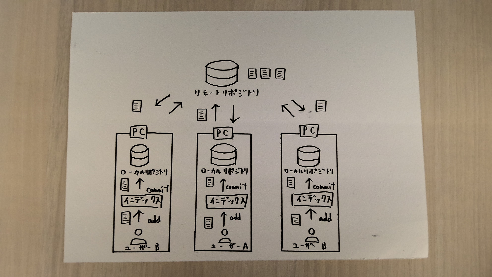

【gitとは？】
バージョン管理システムの一つであり、ソフトウェア管理者がソースやファイルの変更履歴を管理する
分散型バージョン管理システムのこと。
簡単にいうと、ファイルのバージョン管理が簡単にできるツールである。
gitでできることとして、次のようなことが挙げられる。
【リポジトリとは？】
gitを知るうえで必ず覚える必要があるのが「リポジトリ」という言葉。ファイルやソースコード履歴を保存する格納場所のこと。
リポジトリには二種類ある。
- リモートリポジトリ（webサーバー上に存在し、共有で使用する。）
- ローカルリポジトリ（ローカルのPC上に存在し、各ユーザーごとに使用する。）

このようにリポジトリが二種類あることで普段の作業は各々のユーザーが手元にあるローカルリポジトリで行い、ファイルの修正が完了したら、
チーム全体で共有するためにリモートリポジトリに反映させる。このことから分散型と呼ばれるのである。
【htmlとは？】
「Hyper Text Markup Language」の略であり、webページを作成するための言語のこと。
「ハイパーテキスト」とは、独立した文章を相互に関連付ける機能の事であり、「マークアップ」とは、文書構造（テキスト）が正しく認識できるように
コンピュータに文書の要素に目印である
タグを付けて意味づけすることを指す。このタグというのは、文字に意味を与える印のようなもの。
様々な
htmlタグ一覧
基本的に私たちが普段インターネットで見ているwebページはhtmlでできているのである。
参考文献
【初心者向け】GITとはなにか？GITの概念を解説
HTMLとは？HTMLの基本を分かりやすく解説！